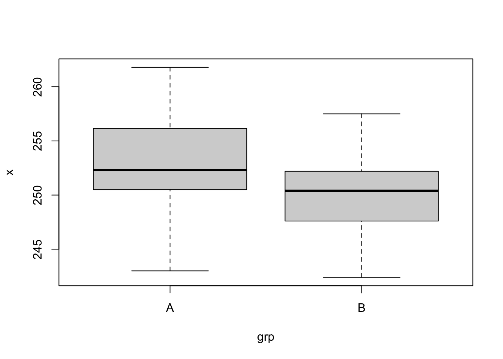
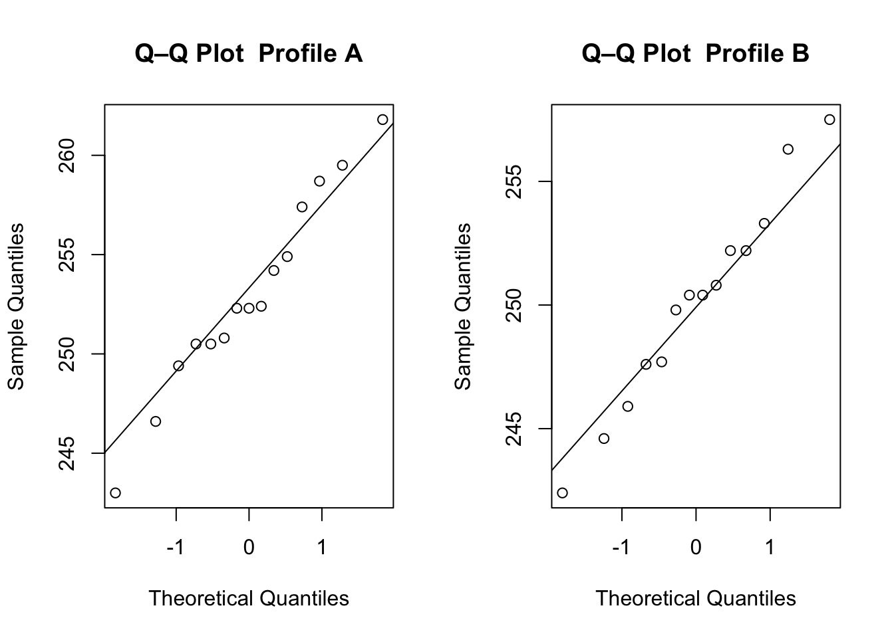

Chapter 11 Comparing Two Populations
In Chapters 9 and 10, we developed tools for inference about a single population parameter. In this chapter, we extend these ideas to compare two populations. Our goal is to quantify differences between populations or test whether such differences exist, using confidence intervals and hypothesis tests. Specifically, we will consider inferences on each of the following: a difference of two population means, a difference of two population proportions, and a ratio of two population variances.
11.1 Inference on a Difference of Two Population Means
In Sections 9.3 and 10.2, we developed methods for inference on a single population mean. In this section, we extend those ideas to the case of comparing two population means. For example, we might wish to compare the average tensile strength of materials produced by two different manufacturing processes, or the average exam scores for two different teaching methods.
Suppose we have two populations, and we collect independent simple random samples from each:
\[ X_1, X_2, \dots, X_{n_1} \overset{\text{iid}}{\sim} N(\mu_1, \sigma_1^2) \]
\[ Y_1, Y_2, \dots, Y_{n_2} \overset{\text{iid}}{\sim} N(\mu_2, \sigma_2^2) \]
where \(\mu_1\) and \(\mu_2\) are the population means, \(\sigma_1\) and \(\sigma_2\) are the population standard deviations, and the two samples are assumed to be independent of each other.
Alternatively, if the population distributions are not Normal, we may instead rely on the Central Limit Theorem (CLT), provided that both sample sizes \(n_1\) and \(n_2\) are sufficiently large. For the purposes of this book, we will typically regard \(n_1 \geq 30\) and \(n_2 \geq 30\) as "large enough" for the CLT to apply.
Our goal is to conduct inference on the difference in population means:
\[ \Delta = \mu_1 - \mu_2 \]
In what follows, we will again focus on two common cases. In both of these cases, we make the same, core assumptions:
\[ X_1, X_2, \dots, X_{n_1} \overset{\text{iid}}{\sim} N(\mu_1, \sigma_1^2) \quad \text{and} \quad Y_1, Y_2, \dots, Y_{n_2} \overset{\text{iid}}{\sim} N(\mu_2, \sigma_2^2) \]
or, more generally, that \(n_1 \geq 30\) and \(n_2 \geq 30\) and hence are both sufficiently large for the Central Limit Theorem to apply. Also, we assume that the two samples are independent (for a major case where they are not assumed to be independent, see 9.4).
- Known population standard deviations (\(\sigma_1\) and \(\sigma_2\) known): In this case, we will use \(Z\)-based methods to construct confidence intervals and hypothesis tests.
- Unknown population standard deviations (\(\sigma_1\) and/or \(\sigma_2\) unknown): In this case, we will use \(t\)-based methods, which require estimating the standard deviations from the data. This will have two sub-cases:
- Pooled: where we can assume \(\sigma_1 = \sigma_2\) and hence 'pool' the sample variance \(s_1\) and \(s_2\)
- Welch's: where we do not assume they are equal and need to approximate the degrees of freedom (df), known as the Satterwaith's approximation.
These two cases mirror the structure of our earlier development in Chapters 9 and 10 for the one-sample setting.
11.1.1 When SDs are Known (Using the Normal Distribution)
Proposition 11.1 Assume that the population standard deviations \(\sigma_1\) and \(\sigma_2\) are known (This will be explicitly stated in the problem, e.g. \(\sigma_1 = 4\) and \(\sigma_2 = 10\)).
Then, a \((1-\alpha)\times 100\%\) confidence interval for the difference in population means
\[ \Delta = \mu_1 - \mu_2 \]
is given by:
\[ \left[ (\bar{X} - \bar{Y}) \pm z_{\alpha/2} \cdot \sqrt{\frac{\sigma_1^2}{n_1} + \frac{\sigma_2^2}{n_2}} \right] \]
Proposition 11.2 Under the same assumptions as Proposition 11.1, to test
\[ H_0: \Delta = \mu_1 - \mu_2 = \Delta_0 \quad \text{vs.} \quad H_A: \Delta \neq \Delta_0 \] Most commonly, \(\Delta_0 = 0\), which corresponds to testing if \(\mu_1 = \mu_2\).
We use the test statistic:
\[ T = \frac{(\bar{X} - \bar{Y}) - 0} {\sqrt{\frac{\sigma_1^2}{n_1} + \frac{\sigma_2^2}{n_2}}} \;\sim\; N(0, 1) \quad \text{under } H_0 \]
After running the experiment and collecting data \(x_1, x_2, \dots, x_{n_1} \quad \text{and} \quad y_1, y_2, \dots, y_{n_2}\) we form the observed test statistic
\[ T_{obs} = \frac{(\bar{x} - \bar{y}) - 0} {\sqrt{\frac{\sigma_1^2}{n_1} + \frac{\sigma_2^2}{n_2}}} \] We reject \(H_0\) at significance level \(\alpha\) if:
\[ |T_{obs}| > z_{\alpha/2} \]
or, equivalently, if the p-value is less than \(\alpha\). For one-sided alternatives, reject \(H_0\) if \(T_{obs} > z_\alpha\) (upper-tailed) or \(T_{obs} < -z_\alpha\) (lower-tailed).
Example 11.1 Consider a dataset consisting of the weights of cups of coffee (in grams of brewed coffee extracted) of two profiles (\(n_1 = 15\) cups from profile 'A' and \(n_2 = 14\) cups from profile 'B'); the data are available in the data folder for the book, in the comma-delimited text file coffee_2.csv.
The dataset contains the quantitative variable x for all 29 weights and the qualitative variable grp (taking values A and B) that designates the profile of each coffee cup. The following R code prints the dimensions of the dataset, displays the first few rows, and makes side-by-side boxplots of the weights by profile. We also create some new variables for later use.
## [1] 29 2| x | grp |
|---|---|
| 261.8 | A |
| 252.3 | A |
| 252.3 | A |
| 243.0 | A |
| 250.8 | A |
| 252.4 | A |

# Extract data components
x = with(dta, x[grp == "A"])
y = with(dta, x[grp == "B"])
n_1 = length(x)
n_2 = length(y)The sample sizes are not large enough to appeal to the CLT, so, before applying the \(z\)-based methods of Proposition 11.1 and 11.2, we create Normal QQ plots to check whether the data are plausibly Normally distributed.
par(mfrow = c(1, 2))
qqnorm(x, main = "Q–Q Plot Profile A"); qqline(x)
qqnorm(y, main = "Q–Q Plot Profile B"); qqline(y)
As discussed in Section 6.6, our interest in QQ plots is in whether the plotted points follow roughly a linear pattern; if the pattern is linear, then we have support for the assumption that the underlying distribution is Normal. With our data, the QQ plots do support the assumption of Normality.
We will assume for now that the population variances are known to be \(\sigma_1^2 = \sigma_2^2 = 20\). Applying the result in Proposition 11.1, we compute a 95% confidence interval for \(\mu_1 - \mu_2\) as follows:
alpha = 0.05
sigma_1 = sigma_2 = sqrt(20)
xBar = mean(x)
yBar = mean(y)
se = sqrt(sigma_1**2 / n_1 + sigma_2**2 / n_2)
c(xBar - yBar - qnorm(1-alpha/2) * se,
xBar - yBar + qnorm(1-alpha/2) * se)## [1] -0.3824982 6.1320220Similarly, applying the result in Proposition 11.2, we test \(H_0: \mu_1 - \mu_2 = 0\) as follows:
## [1] 0.08366485We do not have sufficient evidence to conclude that the population means are different (the confidence interval contains the value zero, and the p-value is greater than 0.05 = \(\alpha\)).
11.1.1.1 Power and Sample Size Calculations
We can approach the calculation of statistical power to detect a particular difference in population means, \(\Delta = \mu_1 - \mu_2\), and associated sample size requirements using the same principles as were used in Chapter 10. In fact, in this idealized context of Normal populations and assumed-known variances, the calculations are relatively simple and can be done manually.
Suppose we wish to test \(H_0: \mu_1 - \mu_2 = \Delta_0\) against the alternative \(H_a: \mu_1 - \mu_2 \neq \Delta_0\). If the true difference is actually \(\Delta'\), the power of the test is the probability that we correctly reject the null hypothesis.
Proposition 11.3 For a test with Type I error rate \(\alpha\), the power \(1-\beta\) to detect a true difference \(\Delta'\) is given by:
\[1 - \beta = \Phi\left( -z_{\alpha/2} - \frac{\Delta' - \Delta_0}{\sigma_{\bar{X} - \bar{Y}}} \right) + 1 - \Phi\left( z_{\alpha/2} - \frac{\Delta' - \Delta_0}{\sigma_{\bar{X} - \bar{Y}}} \right)\]
where \(\Phi(\cdot)\) is commonly-used notation for the standard Normal CDF (i.e., \(\Phi(a) = Pr(Z \leq a)\)), and the standard error of the difference is:
\[\sigma_{\bar{X} - \bar{Y}} = \sqrt{\frac{\sigma_1^2}{n_1} + \frac{\sigma_2^2}{n_2}}\]
If we assume equal sample sizes (\(n_1 = n_2 = n\)) and equal variances (\(\sigma_1^2 = \sigma_2^2 = \sigma^2\)), the required sample size \(n\) to achieve a desired power of \(1-\beta\) for a specific difference \(\Delta'\) is:
\[n = \frac{2\sigma^2(z_{\alpha/2} + z_{\beta})^2}{(\Delta' - \Delta_0)^2}\]
Example 11.2 Continuing with the coffee example context of Example 11.1, suppose we wish to compute the power to detect a mean difference of \(\Delta' = 3\) grams, again assuming for now that \(\sigma_1^2 = \sigma_2^2 = 20\).
Delta_prime = 3 # the mean difference we wish to detect
Delta_0 = 0 # the mean difference under H_0
# Compute critical z-value
alpha = 0.05
z_crit = qnorm(1 - alpha / 2)
# Compute power
pwr = pnorm(-z_crit - (Delta_prime - Delta_0) / se) +
(1 - pnorm(z_crit - (Delta_prime - Delta_0) / se))
pwr## [1] 0.4385731Suppose we want to have power \(1 - \beta = 0.80\) to reject \(H_0: \mu_1 - \mu_2 = 0\) when \(\mu_1 - \mu_2 = 3\), again testing with Type I error \(\alpha = 0.05\) and assuming that \(\sigma_1^2 = \sigma_2^2 = 20\), and under the condition that the sample sizes are equal (\(n_1 = n_2 = n\)), the minimum required sample size \(n\) can be computed as follows:
## [1] 34.88391We thus estimate that, with the observed sample sizes \(n_1\) and \(n_2\), our power to detect \(\Delta' = \mu_1 - \mu_2 = 3\) based on the two-sample \(z\)-test with Type I error rate \(\alpha = 0.05\) is about \(0.44\). In order to increase power to 0.8, if we were to enforce equal sample sizes, we would require \(n_1 = n_2\) of at least 35.
11.1.2 When SDs are Unknown (Using the T Distribution)
Now, we address the much more common and realistic scenario that the population variances \(\sigma_1^2\) and \(\sigma_2^2\) are unknown (This will be explicitly stated in the problem, e.g. \(s_1^2 = 4\) and \(s_2^2 = 10\)). Here, we need to consider an intermediary scenario: that it is reasonable to assume the (unknown) \(\sigma_1^2\) and \(\sigma_2^2\) are in fact equal (known as 'equal variances' or 'pooled'). Then, we will cover the most general case in which the (unknown) population variances \(\sigma_1^2\) and \(\sigma_2^2\) can be arbitrary (known as 'Welch's' or 'Satterthwaite')
11.1.2.1 Equal Variances (i.e. Pooled)
Proposition 11.4 Assume that \(\sigma_1^2\) and \(\sigma_2^2\) are unknown but that they are equal (that is, \(\sigma_1^2 = \sigma_2^2 = \sigma^2\) for some population parameter \(\sigma^2\)). Note that the sample variances won't ever be equal (\(s_1^2 \neq s_2^2\)), this is an assumption about the population variances.
Then, a \((1-\alpha)\times 100\%\) confidence interval for the difference in population means
\[ \Delta = \mu_1 - \mu_2 \]
is given by:
\[ \left[ (\bar{X} - \bar{Y}) \pm t_{\alpha/2, n_1 + n_2 - 2} \cdot s_p\sqrt{\frac{1}{n_1} + \frac{1}{n_2}} \right] \] In the above CI, there appears a new object: \(s_p^2\), which is the pooled sample variance. We will define and motivate \(s_p^2\) now.
Under the assumption that \(\sigma_1^2 = \sigma_2^2\), we can estimate this shared variance parameter by combining the sample variances \(s_1^2\) and \(s_2^2\). We don't want to just average them to form \(\frac{s_1^2 + s_2^2}{2}\), however, as the sample sizes might be different. Therefore, we want to make a weighted average instead:
\[ s_p^2 = \frac{(n_1-1)s_1^2 + (n_2-1)s_2^2 }{n_1 + n_2 - 2} \] This reduces to the simple average \(\frac{s_1^2 + s_2^2}{2}\) if \(n_1 = n_2\) but in general will upweight the sample variance that is from the larger sample size.
As a last observation, the \(t\)-distribution has \(df = n_1 + n_2 - 2\). This is a direct extension of the results in Section 9.3.3 in which the \(df = n - 1\). In fact, \(n_1 + n_2 - 2 = (n_1 - 1) + (n_2 - 1)\).
Proposition 11.5 Under the same assumptions as Proposition 11.1, to test
\[ H_0: \Delta = \mu_1 - \mu_2 = \Delta_0 \quad \text{vs.} \quad H_A: \Delta \neq \Delta_0 \] Most commonly, \(\Delta_0 = 0\), which corresponds to testing if \(\mu_1 = \mu_2\).
We use the test statistic:
\[ T = \frac{(\bar{X} - \bar{Y}) - 0} {S_p\sqrt{\frac{1}{n_1} + \frac{1}{n_2}}} \;\sim\; t(n_1 + n_2 - 2) \quad \text{under } H_0 \]
After running the experiment and collecting data \(x_1, x_2, \ldots, x_{n_1} \text{ and } y_1, y_2, \ldots, y_{n_2}\) we form the observed test statistic
\[ T_{obs} = \frac{(\bar{x} - \bar{y}) - 0} {s_p\sqrt{\frac{1}{n_1} + \frac{1}{n_2}}} \] We reject \(H_0\) at significance level \(\alpha\) if:
\[ |T_{obs}| > t_{\alpha/2, n_1 + n_2 - 2} \]
or, equivalently, if the p-value is less than \(\alpha\). For one-sided alternatives, reject \(H_0\) if \(T_{obs} > t_{\alpha, n_1 + n_2 - 2}\) (upper-tailed) or \(T_{obs} < -t_{\alpha, n_1 + n_2 - 2}\) (lower-tailed).
Here are some helpful R functions for computing the pooled sample variance and the degrees of freedom:
11.1.2.2 Unequal Variances (i.e. 'Welch's' or 'Satterthwaite')
Proposition 11.6 Assume that \(\sigma_1^2\) and \(\sigma_2^2\) are unknown.
Then, a \((1-\alpha)\times 100\%\) confidence interval for the difference in population means
\[ \Delta = \mu_1 - \mu_2 \]
is given by:
\[ \left[ (\bar{X} - \bar{Y}) \pm t_{\alpha/2, df_{sw}} \cdot \sqrt{\frac{s_1^2}{n_1} + \frac{s_2^2}{n_2}} \right] \] To emphasize: there is no reference to the pooled sample variance \(s_p^2\); it does not make sense to pool the sample variances if the population variances are not equal.
In the above CI, there once again appears a new object: \(df_{sw}\), which is the Satterthwaite approximation to the degrees of freedom.
The formula for \(df_{sw}\) is admittedly intimidating: \[ df_{sw} = \frac{\left(\frac{s_1^2}{n_1} + \frac{s_2^2}{n_2}\right)^2}{\frac{\left(\frac{s_1^2}{n_1}\right)^2}{(n_1 - 1)}+\frac{\left(\frac{s_2^2}{n_2}\right)^2}{(n_2 - 1)}} \] and is itself still just an approximation to the correct degrees of freedom. However, we will be interacting with it via software and hence should never need to compute it 'by hand. Here is an R function for doing this computation:
unequalVar = function(sampVar1,sampVar2,n1,n2){
sampVar1/n1 + sampVar2/n2
}
unequalDF = function(sampVar1,sampVar2,n1,n2){
(sampVar1/n1 + sampVar2/n2)^2/((sampVar1/n1)^2/(n1 - 1) + (sampVar2/n2)^2/(n2 - 1))
}Proposition 11.7 Under the same assumptions as Proposition 11.6, to test
\[ H_0: \Delta = \mu_1 - \mu_2 = \Delta_0 \quad \text{vs.} \quad H_A: \Delta \neq \Delta_0 \] Most commonly, \(\Delta_0 = 0\), which corresponds to testing if \(\mu_1 = \mu_2\).
We use the test statistic:
\[ T = \frac{(\bar{X} - \bar{Y}) - 0} {\sqrt{\frac{S_1^2}{n_1} + \frac{S_1^2}{n_2}}} \;\sim\; t(df_{sw}) \quad \text{under } H_0 \]
After running the experiment and collecting data \(x_1, x_2, \dots, x_{n_1} \quad \text{and} \quad y_1, y_2, \dots, y_{n_2}\) we form the observed test statistic
\[ T_{obs} = \frac{(\bar{x} - \bar{y}) - 0} {\sqrt{\frac{s_1^2}{n_1} + \frac{s_2^2}{n_2}}} \] We reject \(H_0\) at significance level \(\alpha\) if:
\[ |T_{obs}| > t_{\alpha/2, df_{sw}} \]
or, equivalently, if the p-value is less than \(\alpha\). For one-sided alternatives, reject \(H_0\) if \(T_{obs} > t_{\alpha, df_{sw}}\) (upper-tailed) or \(T_{obs} < -t_{\alpha, df_{sw}}\) (lower-tailed).
Let's consider the previous example (Example 11.1) but this time relaxing the assumption that we know the population variance. The same discussion applies about loading in the data, creating variables, and checking for normality. This part has been ommitted below for brevity.
Example 11.3 We will assume now that the population variances are unknown but are equal: \(\sigma_1^2 = \sigma_2^2 = ?\). Applying the result in Proposition 11.4, we compute a 95% confidence interval for \(\mu_1 - \mu_2\) as follows:
alpha = 0.05
s_1 = sd(x)
s_2 = sd(y)
s_p = sqrt(pooledVar(s_1**2, s_2**2, n_1, n_2))
xBar = mean(x)
yBar = mean(y)
sePooled = s_p*sqrt(1 / n_1 + 1 / n_2)
c(xBar - yBar - qt(1-alpha/2, pooledDF(n_1,n_2)) * sePooled,
xBar - yBar + qt(1-alpha/2, pooledDF(n_1,n_2)) * sePooled)## [1] -0.6633525 6.4128763If we do not feel compfortable with the `equal variances' assumption, this can be removed in favor of the Welch's version:
alpha = 0.05
s_1 = sd(x)
s_2 = sd(y)
xBar = mean(x)
yBar = mean(y)
seWelch = sqrt(s_1**2 / n_1 + s_2**2 / n_2)
df_sw = unequalDF(s_1**2, s_2**2, n_1, n_2)
c(xBar - yBar - qt(1-alpha/2, df_sw) * seWelch,
xBar - yBar + qt(1-alpha/2, df_sw) * seWelch)## [1] -0.643971 6.393495In this case, the two CIs are remarkedly similar. This is due to two factors: the sample sizes are equal and, more importantly, the sample variances are very similar (24.9398095 and 17.8618132)
Similarly, applying the result in Proposition 11.5, we test \(H_0: \mu_1 - \mu_2 = 0\) as follows:
## [1] 0.1070469Likewise, we could relax the equal variances assumption using 11.7:
## [1] 0.1051827The conclusion remains the same via any of the considered tests: we do not have sufficient evidence to conclude that the population means are different (the confidence interval contains the value zero, and the p-value is greater than 0.05 = \(\alpha\)).
Note that the very useful function t.test can do all of the above in a streamlined fashion:
##
## Two Sample t-test
##
## data: x and y
## t = 1.6671, df = 27, p-value = 0.107
## alternative hypothesis: true difference in means is not equal to 0
## 95 percent confidence interval:
## -0.6633525 6.4128763
## sample estimates:
## mean of x mean of y
## 252.9533 250.0786##
## Welch Two Sample t-test
##
## data: x and y
## t = 1.677, df = 26.76, p-value = 0.1052
## alternative hypothesis: true difference in means is not equal to 0
## 95 percent confidence interval:
## -0.643971 6.393495
## sample estimates:
## mean of x mean of y
## 252.9533 250.078611.2 Difference of Two Population Proportions
In the special case where the \(X_i\) and \(Y_i\) only take on two outcomes (see Chapter 9.5 for examples and details) and \(P(X_i = 1) = p_1\) and \(P(Y_i = 1) = p_2\), then we need to compare two population proportions: \(p_1\) and \(p_2\). There are of course many ways to compare them (e.g. \(\frac{p_1}{p_2}\)) but we will focus our attention on their (arithmetic) difference: \(p_1 - p_2\). Setting this equal to zero is algebraically equivalent to asking: does \(p_1 = p_2\)?
We start by defining the associated sample proportions:
\[ \widehat{p_1} = \frac{\sum_{i=1}^{n_1} X_i}{n_1} \] and \[ \widehat{p_2} = \frac{\sum_{i=1}^{n_2} Y_i}{n_2} \]
Sensibly, to approximate \(p_1 - p_2\) we can use \(\widehat{p_1} - \widehat{p_2}\). We will now develop and use confidence intervals and hypothesis tests for this new statistic. To do this, we need to identify and operationalize the sampling distribution of \(\widehat{p_1} - \widehat{p_2}\)
Let \(\widehat{p_1}\) and \(\widehat{p_2}\) be the sample proportion. If \(n_1\) and \(n_2\) are both such that:
- \(\widehat{p_1}n_1 \geq 10\)
- \((1-\widehat{p_1})n_1 \geq 10\)
- \(\widehat{p_2}n_2 \geq 10\)
- \((1-\widehat{p_2})n_2 \geq 10\)
Then:
\[ \widehat{p_1} - \widehat{p_2} \sim N\left(p_1 - p_2, \frac{p_1(1-p_1)}{n_1} + \frac{p_2(1-p_2)}{n_2}\right) \]
Of course, just like in Chapters 9.5 and 10.4, the variance term needs to be approximated as well as the mean term. This approximation will be different for Confidence Intervals and Hypothesis Testing, however, so stay on your toes.
11.2.1 Confidence Intervals for Two Population Proportions
Proposition 11.8 Presuming the conditions stated about about \(n_1\) and \(n_2\) being large enough for the CLT, then a \((1 - \alpha) \times 100\%\) confidence interval for the difference in population proportions \(p_1 - p_2\) is:
\[ \left[ \, \widehat{p_1} - \widehat{p_2} \pm z_{\alpha/2} \cdot \sqrt{ \frac{\widehat{p_1}(1 - \widehat{p_1})}{n_1} + \frac{\widehat{p_2}(1 - \widehat{p_2})}{n_2} } \, \right] \]
where \(z_{\alpha/2}\) is the critical value from the standard Normal distribution.
Let's formalize this result via an example.
Example 11.4 Here is some R code for this next example:
A marketing team conducts a survey to estimate the proportion of customers who are satisfied with a new product. We want to compare the satisfaction of the brand name product (population 1) to the generic version (population 2). We randomly sample \(n_1 = 150\) and \(n_2 = 148\) customers and find that \(x = 117\) and \(y = 112\) report that they are satisfied with each product, respectively.
Construct a 90% confidence interval for the difference in satisfaction rates: \(p_1- p_2\).
Solution: The sample proportions are \(\widehat{p_1} = 0.78\) and \(\widehat{p_2} = 0.76\). Let's form a confidence interval. The quantile is approximately \(z_{\alpha/2} = z_{.05} = 1.6449\). Putting this all together:
We can compute the standard error and margin of error:
And get the associated confidence interval:
## [1] -0.057 0.104We are 90% confident that the difference in population proportions of satisfied customers is between -0.057 and 0.104.
We do not have sufficient evidence to conclude that the satisfaction rating is any different between the name brand and the generic brand. This could mean that there is more work to be done by the marketing firm to differentiate these two products. Or, if this experiment was performed on behalf of a supermarket chain, we should give more equal share of the shelf space to both products.
Just like using t.test for problems involving \(\mu\), \(\mu_D\), or \(\mu_1 - \mu_2\); we can use prop.test for problems involving \(p\) or, as in this case, \(p_1 - p_2\):
##
## 2-sample test for equality of proportions without continuity correction
##
## data: c(x1, x2) out of c(n1, n2)
## X-squared = 0.22619, df = 1, p-value = 0.6344
## alternative hypothesis: two.sided
## 90 percent confidence interval:
## -0.0571320 0.1036185
## sample estimates:
## prop 1 prop 2
## 0.7800000 0.7567568Editorial comment: the correct = FALSE argument has been chosen to match the previous output and for simplicity. The correction, when used, helps the normal approximating via the Central Limit Theorem. Outside the confines of this class, you should drop this argument, which by default is correct = TRUE.
11.2.2 Hypothesis Tests for Two Population Proportions
Proposition 11.9 Presuming the conditions stated about about \(n_1\) and \(n_2\) being large enough for the CLT, then a hypothesis test for the difference in population proportions \(p_1 - p_2\) is:
\[ H_0 : p_1 - p_2 = 0 \quad\text{vs.}\quad H_A : p_1 - p_2 \neq 0 \] (note: for this class, and almost always in the real world as well, the difference is always compared to 0)
We evaluate this hypothesis test with this test statistic
\[ T = \frac{\widehat{p_1} - \widehat{p_2}} {\sqrt{\widehat{p_c}(1-\widehat{p_c})\left(\frac{1}{n_1} - \frac{1}{n_2}\right)}} \] Here, \(\widehat{p_c}\) is not a typo; rather a combined proportion. Leveraging the null hypothesis assumption that the two population proportions are equal, we combine the two sample proportions \(\widehat{p_1}\) and \(\widehat{p_2}\) by making a weighted averaged (much in the same way we pooled the variances for \(S_p^2\) at the end of Proposition 11.4)
\[ \widehat{p_c} = \frac{n_1 \widehat{p_1} + n_2\widehat{p_2}}{n_1 + n_2} \] and then plugging that in for the standard error. To emphasize: this is not the same as the standard error for the confidence interval, which was derived under different assumptions. The test statistic is
\[ T = \frac{\widehat{p_1} - \widehat{p_2}}{\sqrt{\widehat{p_c}*(1-\widehat{p_c})\left(\frac{1}{n_1} + \frac{1}{n_2}\right)}} \]
Under this null hypothesis assumption:
\[ T \;\sim\; N(0,1) \text{ assuming that } H_0 \text{ is true} \]
After forming the observed test statistic in the usual way, we reject \(H_0\) at significance level \(\alpha\) if:
\[ |T_{obs}| > z_{\alpha/2} \]
For one-sided alternatives, reject \(H_0\) if \(T_{obs} > z_{\alpha}\) (upper-tailed) or \(T_{obs} < -z_{\alpha}\) (lower-tailed). In all three cases, an equivent decision will be reached if the p-value is less than \(\alpha\).
Returning to the previous example (Example 11.4):
Example 11.5 We want to test to see if the population proportions, \(p_1\) and \(p_2\) are equal or not using a 0.1 significance level.
Solution: Now, the quantile \(z_{\alpha/2} = z_{.05} = 1.6449\) is the critical value for the test; we will reject if we observe a test statistic larger than this number in magnitude.
Let's compute the combined proportion
This combined proportion is \(\widehat{p_c} = 0.77\). Observe that it is about halfway between \(\widehat{p_1} = 0.78\) and \(\widehat{p_2} = 0.76\); this is due to the sample sizes being approximately equal.
We can compute the standard error using this combined proportion
making the observed test statistic \(T_{obs} = 0.0232432/0.0488717 = 0.476\)
Comparing this to the critical value:
## [1] FALSEThis false indicates that there is not enough evidence to reject the null hypothesis. Equivalently, we can compute the p-value:
## [1] 0.6343615Which is indeed greater than \(\alpha = 0.1\).
Overall, we do not have sufficient evidence to conclude that the satisfaction rating is any different between the name brand and the generic brand.
As in the previous example, we can use prop.test as well with exactly the same syntax:
##
## 2-sample test for equality of proportions without continuity correction
##
## data: c(x1, x2) out of c(n1, n2)
## X-squared = 0.22619, df = 1, p-value = 0.6344
## alternative hypothesis: two.sided
## 90 percent confidence interval:
## -0.0571320 0.1036185
## sample estimates:
## prop 1 prop 2
## 0.7800000 0.7567568Example 11.6 If we had instead been interested in satisfaction for the name brand being more than the generic, we would have tested the one sided version:
\[ H_0 : p_1 - p_2 \leq 0 \quad\text{vs.}\quad H_A : p_1 - p_2 > 0 \]
The observed test statistic is the same: \(T_{obs} = 0.476\). Our rejection rule is different, however:
## [1] FALSEAs well as the p-value:
## [1] 0.3171808We can modify the syntax of prop.test as follows:
##
## 2-sample test for equality of proportions without continuity correction
##
## data: c(x1, x2) out of c(n1, n2)
## X-squared = 0.22619, df = 1, p-value = 0.3172
## alternative hypothesis: greater
## 90 percent confidence interval:
## -0.03937936 1.00000000
## sample estimates:
## prop 1 prop 2
## 0.7800000 0.7567568We would still find there is not enough evidence to conclude that customer satisfaction for the brand name is more than for the generic one.
Editorial comment: the correct = FALSE argument has been chosen to match the previous output and for simplicity. The correction, when used, helps the normal approximating via the Central Limit Theorem. Outside the confines of this class, you should drop this argument, which by default is correct = TRUE.